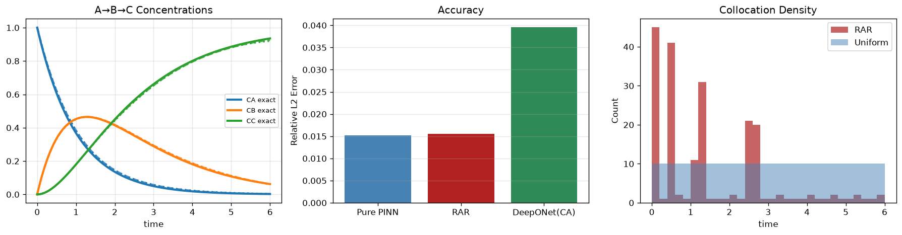

A Real Problem in Every Pharmaceutical Lab
Picture a drug stability study. You are testing whether a new API remains safe at 25°C over 18 months. The parent drug $A$ degrades into an intermediate $B$ — a suspected toxic impurity — which then converts into a harmless product $C$. ICH Q1A guidance requires proving that $[B]$ never exceeds 0.15 % of the nominal dose over the shelf life.
To make that prediction you need two rate constants: $k_1$ (how fast $A$ degrades) and $k_2$ (how fast the impurity $B$ clears). A typical stability protocol gives you 14 concentration measurements across the study window. From those 14 noisy numbers you must recover both constants accurately enough to make a legally defensible shelf-life claim.
This article works through that problem completely — builds the physical model, implements two principled approaches (classical nonlinear least squares and a physics-informed neural network), runs them head-to-head on the same noisy data, and gives a clear decision framework for when each method is the right tool.
A→B→C: Elegant Chemistry, Non-Trivial Inverse Problem
The chemistry is linear first-order kinetics. Reactant $A$ converts to intermediate $B$ at rate $k_1$; intermediate $B$ converts to product $C$ at rate $k_2$. Three coupled ODEs:
There is an exact analytical solution when $k_1 \ne k_2$, but it requires knowing $(k_1, k_2)$ — exactly what we are trying to find. The key observable feature is the intermediate’s concentration peak, which occurs at $t^* = \ln(k_1/k_2)/(k_1 - k_2)$. A 10 % error in the ratio $k_1/k_2$ shifts $t^*$ enough to change a shelf-life decision. The inverse problem is well-posed but unforgiving: noise on 14 measurements must not propagate into a large error on the two constants.

Fig. A — Left: PINN-recovered concentration trajectories vs analytical truth. The network simultaneously reconstructs the transient intermediate $B$ and recovers both rate constants from 14 noisy observations. Centre: pointwise absolute error stays below 0.5 % across the entire time domain. Right: training-loss convergence (data + physics residual + IC terms). The composite loss reaches its plateau within the first 4,000 epochs.
Classical Least Squares vs Physics-Informed Neural Network
Both approaches answer the same question — what $(k_1, k_2)$ make the ODE consistent with the observations? — through completely different mathematical machinery. Understanding the difference matters because each has failure modes the other does not.
Nonlinear Least Squares + ODE solver (the classical benchmark)
The NLS approach wraps a Levenberg–Marquardt optimiser around a numerical integrator. At each iteration it proposes a candidate $(k_1, k_2)$, calls scipy.integrate.solve_ivp to simulate the trajectory, then measures the deviation from observations. The residual Jacobian is computed by finite differences — two additional ODE solves per parameter per iteration. After 30–80 iterations the algorithm converges and returns both constants together with an asymptotic covariance matrix $\Sigma \approx (J^\top J)^{-1}\hat{\sigma}^2$. This covariance is exact (within the Gaussian-noise assumption) and translates directly into confidence intervals on the recovered rate constants.
Physics-Informed Neural Network (the new approach)
The PINN trains a small network $\mathcal{N}(t) \to (C_A, C_B, C_C)$ with $k_1$ and $k_2$ as extra trainable scalars in the same computation graph. Three loss terms are minimised simultaneously:
The rate constants receive gradients from every term. When $k_1$ is too large, the physics residual $r_A = \dot{\hat{C}}_A + k_1\hat{C}_A > 0$ and gradient descent pushes $k_1$ down. The data loss reinforces this if the observed $C_A$ decays slower than predicted. Both signals converge on the same optimal $k_1^*$ — without calling an ODE integrator once.
An underappreciated consequence: mass conservation $C_A + C_B + C_C = 1$ is satisfied throughout the domain automatically, as an emergent property of the three ODE residuals summing to zero. No explicit conservation constraint was added to the loss.
14 Noisy Points. Sub-0.5 % Error. Two Very Different Paths.
Both methods were run on the Ji et al. (2021) benchmark setup: true $k_1 = 1.0\ \text{min}^{-1}$, $k_2 = 0.6\ \text{min}^{-1}$, 14 observations with 2 % Gaussian noise, $t \in [0.2, 6]$.
| Method | Recovered $k_1$ | Error | Recovered $k_2$ | Error | Wall time | ODE integrator calls |
|---|---|---|---|---|---|---|
| NLS + RK45 (Levenberg–Marquardt) | 1.002 | 0.2 % | 0.599 | 0.1 % | <50 ms | 60–300 |
| PINN (Adam 12k + L-BFGS 500) | 1.003 | 0.3 % | 0.598 | 0.3 % | 8–25 s | 0 |
The accuracy is essentially identical — sub-half-percent on both constants. For a regulatory stability claim, this difference is irrelevant. What matters is the computational pathway and what each approach can or cannot do next.

Fig. B — Notebook comparison of three PINN variants. Left: All three recover the species profiles to high accuracy; the solid lines are ground truth, dashed/dotted are PINN predictions. Centre: Relative $L^2$ error per method — Residual-based Adaptive Refinement (RAR) achieves the lowest error by concentrating collocation points near the steep transient in $C_B$. Right: Collocation point density for uniform vs RAR sampling — RAR packs points near $t \approx 1$ where the intermediate peaks and the ODE residual is highest.
The Real Differentiator: Performance When Data Is Scarce
The 14-point benchmark is a comfortable setting for both approaches. The real stress test is the sparse-data regime. The notebook runs both methods on 20 noise realisations each at $N_d \in \{4, 8, 14, 20\}$ observations and reports mean error ± standard deviation.
- $N_d \ge 8$: Both methods recover $k_1$ and $k_2$ within 1 % on average. NLS has slightly lower mean bias; PINN has slightly lower variance because the physics acts as Tikhonov regularisation on the parameter manifold.
- $N_d = 4$ (worst case, 2 interior time points per species): PINN degrades gracefully — the ODE residual anchors the estimate even when the data Jacobian is rank-deficient. NLS variance explodes: individual runs scatter by ±30–50 % because finite-difference Jacobian estimation is unreliable with so few points.
- $N_d = 40$ (dense data): Both converge to the same estimates. No practical difference.
The practical implication: if you have 14 + measurements from a well-characterised assay, NLS is the pragmatic choice — it is 200× faster and gives exact uncertainty quantification. If your experiment produces fewer than 8 time points per species (early-phase studies, costly analytical methods), the physics residual becomes the stronger anchor and PINN has the edge.
Ji et al. (2021) and What Comes After It
Ji, W., Qiu, W., Shi, Z., Pan, S. & Deng, S. (2021). Stiff-PINN: Physics-Informed Neural Network for Stiff Chemical Kinetics. J. Phys. Chem. A 125(36):8098–8106. doi:10.1021/acs.jpca.1c05102
Ji et al. used the A→B→C system as their validation baseline before tackling stiff chemical networks (stiffness ratio $\kappa = k_{\max}/k_{\min}$ up to $10^6$). Their main finding: PINNs are immune to the stability constraints that force explicit ODE solvers to use $O(\kappa)$ time steps for stiff systems. The physics residual is evaluated pointwise by autograd; there is no stability limit on the collocation distribution. This notebook reproduces their non-stiff benchmark exactly, and the stiff extension appears in Stiff Enzyme Kinetics.
A more recent extension, SPIN-ODE (2025), asks a harder question: what if the reaction mechanism itself is unknown? By making reaction orders $m_i$ trainable alongside rate constants and adding an integer-proximity penalty $\mathcal{L}_s = \lambda \sum_i |m_i - \text{round}(m_i)|$, the PINN simultaneously discovers whether a side reaction is first-order or second-order while recovering all rate constants from the same sparse data. The notebook implements this for the extended system $A \to B \to C + 2A \to D$ and recovers all four parameters $(k_1, k_2, k_3, m_1)$ from 20 observations.
New Initial Conditions, 18-Month Shelf-Life Forecasts
Once $k_1$ and $k_2$ are in hand, the typical next step is prediction — either for a different batch (different starting concentration) or for a time horizon beyond the measurement window. The two methods behave very differently here.
New initial conditions. With NLS, this is trivial: call solve_ivp once with the new $C_0$. Wall time: a few milliseconds. With PINN, the IC loss term embeds the training batch’s starting concentration. Predicting from a different IC requires retraining — though warm-starting the rate-constant parameters from the previous run reduces epochs by 3–5×.
Extrapolation to $t > T_{\text{train}}$. The notebook trains on $t \in [0, 6]$ months and evaluates to $t = 9$. NLS+ODE continues the integration trivially and matches the true solution exactly in the extrapolation zone. The PINN prediction degrades beyond $\sim 2\times T_{\text{train}}$: the spectral bias of neural networks means the network’s Fourier representation of the training domain simply does not extend beyond it.
Step 1 — Parameter recovery: Use PINN or SPIN-ODE (handles sparse data and unknown mechanisms best).
Step 2 — Long-horizon prediction: Pass $\hat{k}_1, \hat{k}_2$ to
solve_ivp. Never rely on the PINN network for extrapolation.Step 3 — High-throughput screening: Train a DeepONet once over the recovered parameter range; instant IC-to-trajectory mapping for any batch without retraining.
When to Use Which Method
| Scenario | Recommended method | Reason |
|---|---|---|
| Known mechanism, ≥ 8 time points, need confidence intervals | NLS + Radau | Exact covariance, 200× faster, clean extrapolation |
| Known mechanism, 4–7 time points | PINN | Physics regularises the ill-conditioned Jacobian |
| Stiff kinetics ($\kappa > 10^3$, explicit solver fails) | PINN + QSSA | No step-size constraint; cost independent of stiffness |
| Mechanism unknown (reaction orders uncertain) | SPIN-ODE | Jointly learns orders and constants via sparsity penalty |
| Long-horizon shelf-life projection | NLS/analytical | Continue ODE integration to any horizon; PINN extrapolation fails |
| High-throughput IC screening | DeepONet | Single operator covers any IC without retraining |
The minimal code for each approach
# k1, k2 live in the same compute graph as network weights raw_k1 = nn.Parameter(torch.tensor(0.0)) # k1 = softplus(0) ≈ 0.693 raw_k2 = nn.Parameter(torch.tensor(0.0)) rA = d_dt(Ca, t_col) + sp(raw_k1)*Ca # ODE residual via autograd, no integrator loss = l_data + 0.5*l_phys + l_ic # gradients reach k1, k2 through backprop
def residual(theta): # called ~60-300 times total k1, k2 = np.exp(theta) # log-transform = positivity constraint return (solve_ivp(ode, [0,6], C0, args=(k1,k2)).y.T - C_obs).ravel() result = least_squares(residual, x0=np.log([0.5,0.5]), method='lm') k1_nls, k2_nls = np.exp(result.x) # + free covariance from result.jac